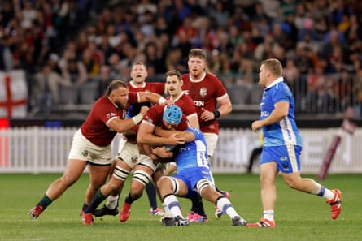
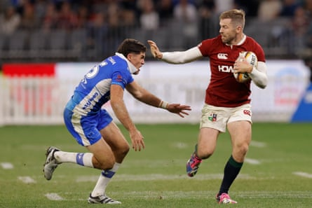

T he British & Irish Lions have barely started their trek around Australia, but the all-important Test series is fast approaching. Some definitive selection calls will soon have to be made and this week’s games, against the Queensland Reds in Brisbane on Wednesday and the New South Wales Waratahs in Sydney on Saturday, will be pivotal for certain individuals. The Breakdown takes a look at the five main areas of debate.
Front row
Dan Sheehan, as expected, has emerged as the Lions’ Test hooker in waiting. The moment he was asked to lead the side in Perth , taking over from the tour captain, Maro Itoje, it was a sure indicator of how highly Andy Farrell rates him. Ronan Kelleher and Luke Cowan-Dickie are probably contesting the bench spot; some consistent lineout darts from the former against the Reds on Saturday could go a long way towards securing it.
At loosehead prop, this is also a big game for Andrew Porter if he intends to start ahead of Ellis Genge. The latter was in rip-snorting mode against Argentina and the Lions need powerful, unapologetic ball-carriers. Which leaves tighthead, still an area with a slight question hovering over it from Farrell’s perspective. Everyone knows how good Tadhg Furlong can be; the question is whether the big man can now replicate his past heroics. Finlay Bealham, only on the tour because of Zander Fagerson’s injury, took his chance against the Pumas but a commanding display by Will Stuart this week could yet help the Englishman book himself a starting role in the first Test back in Brisbane on 19 July.
Second row
The lock conversation is fascinating. Itoje, as captain, is the first name on the Lions team-sheet but big Joe McCarthy had such a high-class game in Perth that it will be tough to leave him out of the first Test, particularly with the Wallabies primed to come hard early on. Some people thrive in the rarefied air of a Lions tours and the 24-year-old McCarthy – right down to his Aussie-style mullet – is relishing the opportunity.
But if Itoje and McCarthy end up starting, that would probably require the Lions to consider a third lineout option at No 6, almost certainly Tadhg Beirne. There is just one snag. Beirne, by his absurdly high standards, has yet to show the absolute best of himself in his two games. Does Farrell back him to come good or slide him back into the second row at the in-form McCarthy’s expense?
Tadhg Beirne is tackled during the Lions game against Western Force.Photograph: Richard Wainwright/AAP
The door remains fractionally open, consequently, for the combative Ollie Chessum if he has a barnstormer alongside Itoje against the Reds. Should Farrell opt for a 6-2 bench – and even if he doesn’t – Chessum could easily be in the Test squad conversation.
Back row
The blindside conundrum is further complicated by the presence of Tom Curry, the sort of relentless operator every coach loves to have. The Wallabies will have big Rob Valetini in that position and the Lions cannot afford to let him roam free. Should Beirne start at 6, though, that means deploying Curry either at 7 or 8 or else on the bench. Finding a slot at openside will be tricky given Josh van der Flier’s timely return to form; the Irishman is experienced, reliable and showed up well in Perth.
Then there is Henry Pollock: the reason Farrell likes the 20-year-old is that he brings pace and dynamism few others possess. The Reds game is massive, accordingly, for Jack Conan, who was probably the narrow frontrunner for the No 8 shirt (in the absence of Caelan Doris) when the squad was unveiled.
Ben Earl has had limited opportunity to show the form that has made him an England regular. The most compelling option of the lot? What a shame Jack Willis – brilliant again for Toulouse in the Top 14 final – is not here.
Elliot Daly fends off Ben Donaldson in Perth. The full-back has impressed on tour.Photograph: Richard Wainwright/AAP
Midfield
The Test half-back pairing , barring injuries, is set to be Jamison Gibson-Park and Finn Russell, but the combination that will start outside them is less certain. On paper, Sione Tuipulotu would be the perfect foil for Russell at 12, but the Glasgow Warrior has not played much this year. Farrell has also mixed and matched, declining to use the all-Irish duo of Bundee Aki and Gary Ringrose or the Scottish combo of Tuipulotu and Huw Jones for the moment.
The selection to watch, as a result, will be the side to face the Waratahs on Saturday; Farrell may well be tempted to trial his optimal backline against the Brumbies in Canberra the following Wednesday. If Aki and Ringrose are picked it could be good news for “Huwipulotu” as the regular Scottish partnership has become known.
Back three
Similarly it is easy to imagine Farrell being tempted to plump for two Ireland wingers who are used to dovetailing in a green jersey. James Lowe is such a smart footballer and helped to create a couple of stunning tries in Perth. Mack Hansen is a different type of player but his kick-chase ability and energy also make him an awkward opponent. Unless this week changes the narrative completely. Maybe the powerful Duhan van der Merwe will take the Reds to the cleaners? Perhaps Tommy Freeman will remind everyone of his aerial ability, a vital area against the Wallabies? Then there is the battle at full-back. Blair Kinghorn, last seen celebrating in his Toulouse budgie smugglers, has finally arrived and will almost certainly feature against the Waratahs. In his absence, Elliot Daly has not put a foot wrong and Hugo Keenan has plenty of credit in the Bank of Farrell. A Test back-three of Kinghorn, Lowe and Hansen – with Daly on the bench – would not be a surprise but nothing is set in stone.
- This is an extract taken from our weekly rugby union email, the Breakdown. To sign up, just visit this page and follow the instructions.